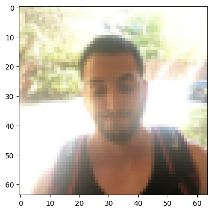
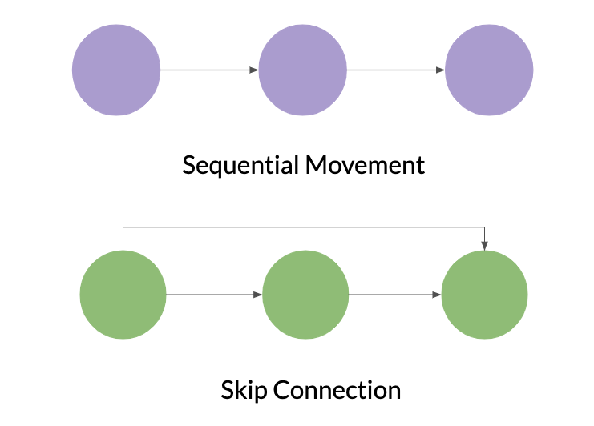
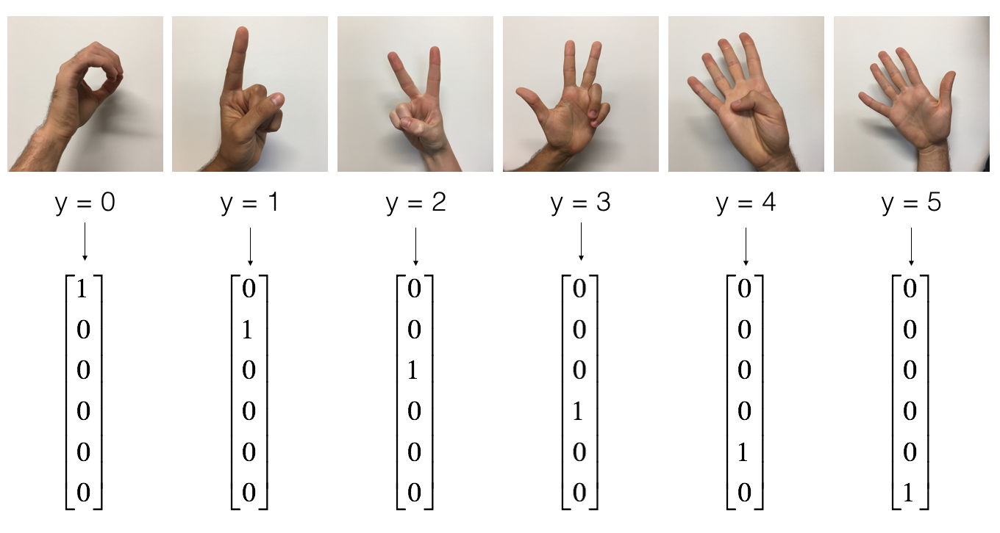

Convolutional Neural Networks: Application#
Welcome to Course 4’s second assignment! In this notebook, you will:
Create a mood classifer using the TF Keras Sequential API
Build a ConvNet to identify sign language digits using the TF Keras Functional API
After this assignment you will be able to:
Build and train a ConvNet in TensorFlow for a binary classification problem
Build and train a ConvNet in TensorFlow for a multiclass classification problem
Explain different use cases for the Sequential and Functional APIs
To complete this assignment, you should already be familiar with TensorFlow. If you are not, please refer back to the TensorFlow Tutorial of the third week of Course 2 (”Improving deep neural networks”).
Important Note on Submission to the AutoGrader#
Before submitting your assignment to the AutoGrader, please make sure you are not doing the following:
You have not added any extra
printstatement(s) in the assignment.You have not added any extra code cell(s) in the assignment.
You have not changed any of the function parameters.
You are not using any global variables inside your graded exercises. Unless specifically instructed to do so, please refrain from it and use the local variables instead.
You are not changing the assignment code where it is not required, like creating extra variables.
If you do any of the following, you will get something like, Grader Error: Grader feedback not found (or similarly unexpected) error upon submitting your assignment. Before asking for help/debugging the errors in your assignment, check for these first. If this is the case, and you don’t remember the changes you have made, you can get a fresh copy of the assignment by following these instructions.
1 - Packages#
As usual, begin by loading in the packages.
### v1.1
import math
import numpy as np
import h5py
import matplotlib.pyplot as plt
from matplotlib.pyplot import imread
import scipy
from PIL import Image
import pandas as pd
import tensorflow as tf
import tensorflow.keras.layers as tfl
from tensorflow.python.framework import ops
from cnn_utils import *
from test_utils import summary, comparator
%matplotlib inline
np.random.seed(1)
1.1 - Load the Data and Split the Data into Train/Test Sets#
You’ll be using the Happy House dataset for this part of the assignment, which contains images of peoples’ faces. Your task will be to build a ConvNet that determines whether the people in the images are smiling or not – because they only get to enter the house if they’re smiling!
X_train_orig, Y_train_orig, X_test_orig, Y_test_orig, classes = load_happy_dataset()
# Normalize image vectors
X_train = X_train_orig/255.
X_test = X_test_orig/255.
# Reshape
Y_train = Y_train_orig.T
Y_test = Y_test_orig.T
print ("number of training examples = " + str(X_train.shape[0]))
print ("number of test examples = " + str(X_test.shape[0]))
print ("X_train shape: " + str(X_train.shape))
print ("Y_train shape: " + str(Y_train.shape))
print ("X_test shape: " + str(X_test.shape))
print ("Y_test shape: " + str(Y_test.shape))
number of training examples = 600
number of test examples = 150
X_train shape: (600, 64, 64, 3)
Y_train shape: (600, 1)
X_test shape: (150, 64, 64, 3)
Y_test shape: (150, 1)
You can display the images contained in the dataset. Images are 64x64 pixels in RGB format (3 channels).
index = 124
plt.imshow(X_train_orig[index]) #display sample training image
plt.show()

2 - Layers in TF Keras#
In the previous assignment, you created layers manually in numpy. In TF Keras, you don’t have to write code directly to create layers. Rather, TF Keras has pre-defined layers you can use.
When you create a layer in TF Keras, you are creating a function that takes some input and transforms it into an output you can reuse later. Nice and easy!
3 - The Sequential API#
In the previous assignment, you built helper functions using numpy to understand the mechanics behind convolutional neural networks. Most practical applications of deep learning today are built using programming frameworks, which have many built-in functions you can simply call. Keras is a high-level abstraction built on top of TensorFlow, which allows for even more simplified and optimized model creation and training.
For the first part of this assignment, you’ll create a model using TF Keras’ Sequential API, which allows you to build layer by layer, and is ideal for building models where each layer has exactly one input tensor and one output tensor.
As you’ll see, using the Sequential API is simple and straightforward, but is only appropriate for simpler, more straightforward tasks. Later in this notebook you’ll spend some time building with a more flexible, powerful alternative: the Functional API.
3.1 - Create the Sequential Model#
As mentioned earlier, the TensorFlow Keras Sequential API can be used to build simple models with layer operations that proceed in a sequential order.
You can also add layers incrementally to a Sequential model with the .add() method, or remove them using the .pop() method, much like you would in a regular Python list.
Actually, you can think of a Sequential model as behaving like a list of layers. Like Python lists, Sequential layers are ordered, and the order in which they are specified matters. If your model is non-linear or contains layers with multiple inputs or outputs, a Sequential model wouldn’t be the right choice!
For any layer construction in Keras, you’ll need to specify the input shape in advance. This is because in Keras, the shape of the weights is based on the shape of the inputs. The weights are only created when the model first sees some input data. Sequential models can be created by passing a list of layers to the Sequential constructor, like you will do in the next assignment.
Exercise 1 - happyModel#
Implement the happyModel function below to build the following model: ZEROPAD2D -> CONV2D -> BATCHNORM -> RELU -> MAXPOOL -> FLATTEN -> DENSE. Take help from tf.keras.layers
Also, plug in the following parameters for all the steps:
ZeroPadding2D: padding 3, input shape 64 x 64 x 3
Conv2D: Use 32 7x7 filters, stride 1
BatchNormalization: for axis 3
MaxPool2D: Using default parameters
Flatten the previous output.
Fully-connected (Dense) layer: Apply a fully connected layer with 1 neuron and a sigmoid activation.
Hint:
Use tfl as shorthand for tensorflow.keras.layers
# GRADED FUNCTION: happyModel
def happyModel():
"""
Implements the forward propagation for the binary classification model:
ZEROPAD2D -> CONV2D -> BATCHNORM -> RELU -> MAXPOOL -> FLATTEN -> DENSE
Note that for simplicity and grading purposes, you'll hard-code all the values
such as the stride and kernel (filter) sizes.
Normally, functions should take these values as function parameters.
Arguments:
None
Returns:
model -- TF Keras model (object containing the information for the entire training process)
"""
model = tf.keras.Sequential([
## ZeroPadding2D with padding 3, input shape of 64 x 64 x 3
## Conv2D with 32 7x7 filters and stride of 1
## BatchNormalization for axis 3
## ReLU
## Max Pooling 2D with default parameters
## Flatten layer
## Dense layer with 1 unit for output & 'sigmoid' activation
# YOUR CODE STARTS HERE
# YOUR CODE ENDS HERE
])
return model
happy_model = happyModel()
# Print a summary for each layer
for layer in summary(happy_model):
print(layer)
output = [['ZeroPadding2D', (None, 70, 70, 3), 0, ((3, 3), (3, 3))],
['Conv2D', (None, 64, 64, 32), 4736, 'valid', 'linear', 'GlorotUniform'],
['BatchNormalization', (None, 64, 64, 32), 128],
['ReLU', (None, 64, 64, 32), 0],
['MaxPooling2D', (None, 32, 32, 32), 0, (2, 2), (2, 2), 'valid'],
['Flatten', (None, 32768), 0],
['Dense', (None, 1), 32769, 'sigmoid']]
comparator(summary(happy_model), output)
Test failed. Your output is not as expected output.
Expected Output:#
['ZeroPadding2D', (None, 70, 70, 3), 0, ((3, 3), (3, 3))]
['Conv2D', (None, 64, 64, 32), 4736, 'valid', 'linear', 'GlorotUniform']
['BatchNormalization', (None, 64, 64, 32), 128]
['ReLU', (None, 64, 64, 32), 0]
['MaxPooling2D', (None, 32, 32, 32), 0, (2, 2), (2, 2), 'valid']
['Flatten', (None, 32768), 0]
['Dense', (None, 1), 32769, 'sigmoid']
All tests passed!
Now that your model is created, you can compile it for training with an optimizer and loss of your choice. When the string accuracy is specified as a metric, the type of accuracy used will be automatically converted based on the loss function used. This is one of the many optimizations built into TensorFlow that make your life easier! If you’d like to read more on how the compiler operates, check the docs here.
happy_model.compile(optimizer='adam',
loss='binary_crossentropy',
metrics=['accuracy'])
It’s time to check your model’s parameters with the .summary() method. This will display the types of layers you have, the shape of the outputs, and how many parameters are in each layer.
happy_model.summary()
Model: "sequential"
┏━━━━━━━━━━━━━━━━━━━━━━━━━━━━━━━━━━━━━━┳━━━━━━━━━━━━━━━━━━━━━━━━━━━━━┳━━━━━━━━━━━━━━━━━┓ ┃ Layer (type) ┃ Output Shape ┃ Param # ┃ ┡━━━━━━━━━━━━━━━━━━━━━━━━━━━━━━━━━━━━━━╇━━━━━━━━━━━━━━━━━━━━━━━━━━━━━╇━━━━━━━━━━━━━━━━━┩ └──────────────────────────────────────┴─────────────────────────────┴─────────────────┘
Total params: 0 (0.00 B)
Trainable params: 0 (0.00 B)
Non-trainable params: 0 (0.00 B)
3.2 - Train and Evaluate the Model#
After creating the model, compiling it with your choice of optimizer and loss function, and doing a sanity check on its contents, you are now ready to build!
Simply call .fit() to train. That’s it! No need for mini-batching, saving, or complex backpropagation computations. That’s all been done for you, as you’re using a TensorFlow dataset with the batches specified already. You do have the option to specify epoch number or minibatch size if you like (for example, in the case of an un-batched dataset).
happy_model.fit(X_train, Y_train, epochs=10, batch_size=16)
Epoch 1/10
---------------------------------------------------------------------------
ValueError Traceback (most recent call last)
Cell In[9], line 1
----> 1 happy_model.fit(X_train, Y_train, epochs=10, batch_size=16)
File ~\Python\Lib\site-packages\keras\src\utils\traceback_utils.py:122, in filter_traceback.<locals>.error_handler(*args, **kwargs)
119 filtered_tb = _process_traceback_frames(e.__traceback__)
120 # To get the full stack trace, call:
121 # `keras.config.disable_traceback_filtering()`
--> 122 raise e.with_traceback(filtered_tb) from None
123 finally:
124 del filtered_tb
File ~\Python\Lib\site-packages\keras\src\models\sequential.py:172, in Sequential.build(self, input_shape)
170 return
171 if not self._layers:
--> 172 raise ValueError(
173 f"Sequential model {self.name} cannot be built because it has "
174 "no layers. Call `model.add(layer)`."
175 )
176 if isinstance(self._layers[0], InputLayer):
177 if self._layers[0].batch_shape != input_shape:
ValueError: Sequential model sequential cannot be built because it has no layers. Call `model.add(layer)`.
After that completes, just use .evaluate() to evaluate against your test set. This function will print the value of the loss function and the performance metrics specified during the compilation of the model. In this case, the binary_crossentropy and the accuracy respectively.
happy_model.evaluate(X_test, Y_test)
Easy, right? But what if you need to build a model with shared layers, branches, or multiple inputs and outputs? This is where Sequential, with its beautifully simple yet limited functionality, won’t be able to help you.
Next up: Enter the Functional API, your slightly more complex, highly flexible friend.
4 - The Functional API#
Welcome to the second half of the assignment, where you’ll use Keras’ flexible Functional API to build a ConvNet that can differentiate between 6 sign language digits.
The Functional API can handle models with non-linear topology, shared layers, as well as layers with multiple inputs or outputs. Imagine that, where the Sequential API requires the model to move in a linear fashion through its layers, the Functional API allows much more flexibility. Where Sequential is a straight line, a Functional model is a graph, where the nodes of the layers can connect in many more ways than one.
In the visual example below, the one possible direction of the movement Sequential model is shown in contrast to a skip connection, which is just one of the many ways a Functional model can be constructed. A skip connection, as you might have guessed, skips some layer in the network and feeds the output to a later layer in the network. Don’t worry, you’ll be spending more time with skip connections very soon!

4.1 - Load the SIGNS Dataset#
As a reminder, the SIGNS dataset is a collection of 6 signs representing numbers from 0 to 5.
# Loading the data (signs)
X_train_orig, Y_train_orig, X_test_orig, Y_test_orig, classes = load_signs_dataset()

The next cell will show you an example of a labelled image in the dataset. Feel free to change the value of index below and re-run to see different examples.
# Example of an image from the dataset
index = 9
plt.imshow(X_train_orig[index])
print ("y = " + str(np.squeeze(Y_train_orig[:, index])))
4.2 - Split the Data into Train/Test Sets#
In Course 2, you built a fully-connected network for this dataset. But since this is an image dataset, it is more natural to apply a ConvNet to it.
To get started, let’s examine the shapes of your data.
X_train = X_train_orig/255.
X_test = X_test_orig/255.
Y_train = convert_to_one_hot(Y_train_orig, 6).T
Y_test = convert_to_one_hot(Y_test_orig, 6).T
print ("number of training examples = " + str(X_train.shape[0]))
print ("number of test examples = " + str(X_test.shape[0]))
print ("X_train shape: " + str(X_train.shape))
print ("Y_train shape: " + str(Y_train.shape))
print ("X_test shape: " + str(X_test.shape))
print ("Y_test shape: " + str(Y_test.shape))
4.3 - Forward Propagation#
In TensorFlow, there are built-in functions that implement the convolution steps for you. By now, you should be familiar with how TensorFlow builds computational graphs. In the Functional API, you create a graph of layers. This is what allows such great flexibility.
However, the following model could also be defined using the Sequential API since the information flow is on a single line. But don’t deviate. What we want you to learn is to use the functional API.
Begin building your graph of layers by creating an input node that functions as a callable object:
input_img = tf.keras.Input(shape=input_shape):
Then, create a new node in the graph of layers by calling a layer on the input_img object:
tf.keras.layers.Conv2D(filters= … , kernel_size= … , padding=’same’)(input_img): Read the full documentation on Conv2D.
tf.keras.layers.MaxPool2D(pool_size=(f, f), strides=(s, s), padding=’same’):
MaxPool2D()downsamples your input using a window of size (f, f) and strides of size (s, s) to carry out max pooling over each window. For max pooling, you usually operate on a single example at a time and a single channel at a time. Read the full documentation on MaxPool2D.tf.keras.layers.ReLU(): computes the elementwise ReLU of Z (which can be any shape). You can read the full documentation on ReLU.
tf.keras.layers.Flatten(): given a tensor “P”, this function takes each training (or test) example in the batch and flattens it into a 1D vector.
If a tensor P has the shape (batch_size,h,w,c), it returns a flattened tensor with shape (batch_size, k), where \(k=h \times w \times c\). “k” equals the product of all the dimension sizes other than the first dimension.
For example, given a tensor with dimensions [100, 2, 3, 4], it flattens the tensor to be of shape [100, 24], where 24 = 2 * 3 * 4. You can read the full documentation on Flatten.
tf.keras.layers.Dense(units= … , activation=’softmax’)(F): given the flattened input F, it returns the output computed using a fully connected layer. You can read the full documentation on Dense.
In the last function above (tf.keras.layers.Dense()), the fully connected layer automatically initializes weights in the graph and keeps on training them as you train the model. Hence, you did not need to initialize those weights when initializing the parameters.
Lastly, before creating the model, you’ll need to define the output using the last of the function’s compositions (in this example, a Dense layer):
outputs = tf.keras.layers.Dense(units=6, activation=’softmax’)(F)
Window, kernel, filter, pool#
The words “kernel” and “filter” are used to refer to the same thing. The word “filter” accounts for the amount of “kernels” that will be used in a single convolution layer. “Pool” is the name of the operation that takes the max or average value of the kernels.
This is why the parameter pool_size refers to kernel_size, and you use (f,f) to refer to the filter size.
Pool size and kernel size refer to the same thing in different objects - They refer to the shape of the window where the operation takes place.
Exercise 2 - convolutional_model#
Implement the convolutional_model function below to build the following model: CONV2D -> RELU -> MAXPOOL -> CONV2D -> RELU -> MAXPOOL -> FLATTEN -> DENSE. Use the functions above!
Also, plug in the following parameters for all the steps:
Conv2D: Use 8 4 by 4 filters, stride 1, padding is “SAME”
MaxPool2D: Use an 8 by 8 filter size and an 8 by 8 stride, padding is “SAME”
Conv2D: Use 16 2 by 2 filters, stride 1, padding is “SAME”
ReLU
MaxPool2D: Use a 4 by 4 filter size and a 4 by 4 stride, padding is “SAME”
Flatten the previous output.
Fully-connected (Dense) layer: Apply a fully connected layer with 6 neurons and a softmax activation.
# GRADED FUNCTION: convolutional_model
def convolutional_model(input_shape):
"""
Implements the forward propagation for the model:
CONV2D -> RELU -> MAXPOOL -> CONV2D -> RELU -> MAXPOOL -> FLATTEN -> DENSE
Note that for simplicity and grading purposes, you'll hard-code some values
such as the stride and kernel (filter) sizes.
Normally, functions should take these values as function parameters.
Arguments:
input_img -- input dataset, of shape (input_shape)
Returns:
model -- TF Keras model (object containing the information for the entire training process)
"""
input_img = tf.keras.Input(shape=input_shape)
## CONV2D: 8 filters 4x4, stride of 1, padding 'SAME'
# Z1 = None
## RELU
# A1 = None
## MAXPOOL: window 8x8, stride 8, padding 'SAME'
# P1 = None
## CONV2D: 16 filters 2x2, stride 1, padding 'SAME'
# Z2 = None
## RELU
# A2 = None
## MAXPOOL: window 4x4, stride 4, padding 'SAME'
# P2 = None
## FLATTEN
# F = None
## Dense layer
## 6 neurons in output layer. Hint: one of the arguments should be "activation='softmax'"
# outputs = None
# YOUR CODE STARTS HERE
# YOUR CODE ENDS HERE
model = tf.keras.Model(inputs=input_img, outputs=outputs)
return model
conv_model = convolutional_model((64, 64, 3))
conv_model.compile(optimizer='adam',
loss='categorical_crossentropy',
metrics=['accuracy'])
conv_model.summary()
output = [['InputLayer', [(None, 64, 64, 3)], 0],
['Conv2D', (None, 64, 64, 8), 392, 'same', 'linear', 'GlorotUniform'],
['ReLU', (None, 64, 64, 8), 0],
['MaxPooling2D', (None, 8, 8, 8), 0, (8, 8), (8, 8), 'same'],
['Conv2D', (None, 8, 8, 16), 528, 'same', 'linear', 'GlorotUniform'],
['ReLU', (None, 8, 8, 16), 0],
['MaxPooling2D', (None, 2, 2, 16), 0, (4, 4), (4, 4), 'same'],
['Flatten', (None, 64), 0],
['Dense', (None, 6), 390, 'softmax']]
comparator(summary(conv_model), output)
Both the Sequential and Functional APIs return a TF Keras model object. The only difference is how inputs are handled inside the object model!
4.4 - Train the Model#
train_dataset = tf.data.Dataset.from_tensor_slices((X_train, Y_train)).batch(64)
test_dataset = tf.data.Dataset.from_tensor_slices((X_test, Y_test)).batch(64)
history = conv_model.fit(train_dataset, epochs=100, validation_data=test_dataset)
5 - History Object#
The history object is an output of the .fit() operation, and provides a record of all the loss and metric values in memory. It’s stored as a dictionary that you can retrieve at history.history:
history.history
Now visualize the loss over time using history.history:
# The history.history["loss"] entry is a dictionary with as many values as epochs that the
# model was trained on.
df_loss_acc = pd.DataFrame(history.history)
df_loss= df_loss_acc[['loss','val_loss']]
df_loss.rename(columns={'loss':'train','val_loss':'validation'},inplace=True)
df_acc= df_loss_acc[['accuracy','val_accuracy']]
df_acc.rename(columns={'accuracy':'train','val_accuracy':'validation'},inplace=True)
df_loss.plot(title='Model loss',figsize=(12,8)).set(xlabel='Epoch',ylabel='Loss')
df_acc.plot(title='Model Accuracy',figsize=(12,8)).set(xlabel='Epoch',ylabel='Accuracy')
Congratulations! You’ve finished the assignment and built two models: One that recognizes smiles, and another that recognizes SIGN language with almost 80% accuracy on the test set. In addition to that, you now also understand the applications of two Keras APIs: Sequential and Functional. Nicely done!
By now, you know a bit about how the Functional API works and may have glimpsed the possibilities. In your next assignment, you’ll really get a feel for its power when you get the opportunity to build a very deep ConvNet, using ResNets!
6 - Bibliography#
You’re always encouraged to read the official documentation. To that end, you can find the docs for the Sequential and Functional APIs here: